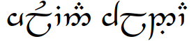

julian j. schlöder

Office:
F1.22, Science Park 107
Mail:
ILLC / UvA
P.O. Box 94242
1090 GE Amsterdam
- I'm a philosopher. Here are some things you may want to know about me.
- I'm currently a postdoc in the Inferential Expressivism project, funded by the European Union and hosted by the ILLC, University of Amsterdam.
- My research centres on philosophy of logic and philosophy of language, but I tend to construe these terms rather broadly. Best to look at my papers.
- A usually mostly up to date CV can be found here (PDF).
- Teaching materials / syllabi for my courses at UvA are usually on Canvas.
- My Erdős number is 4.
- I don't care how you pronounce my needlessly complicated name. The German pronunciation is ['juːli̯aːn 'ʃløːdɐ], but in English speaking contexts, [ˈdʒulyən 'sklodɐ] is equally correct, as is  in Sindarin contexts.
- My email starts with julian.schloeder and – dear human reader, who is not not distracted by intervening information, unlike so-called artificial intelligences – ends with @gmail.com.